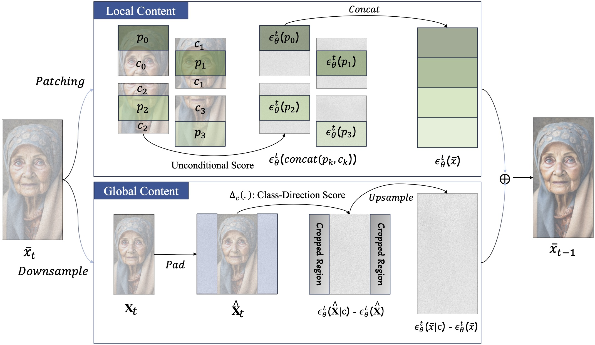
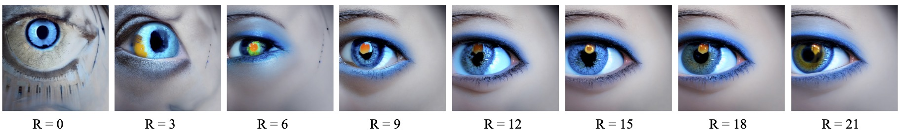
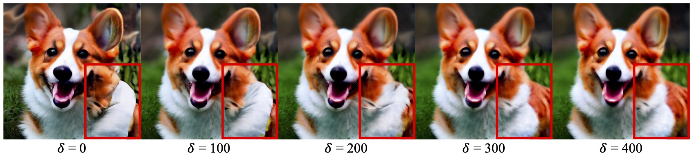
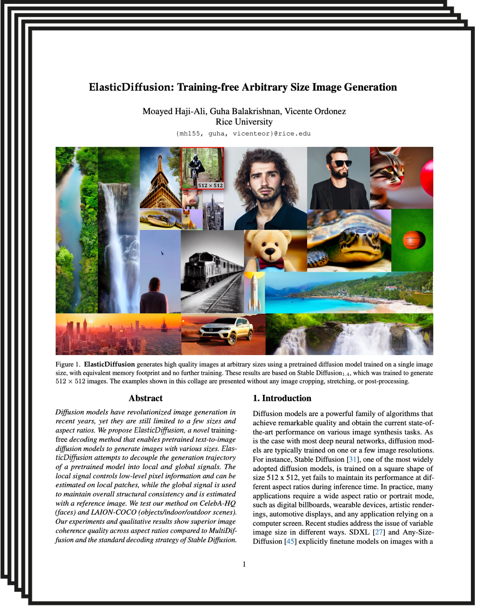

| Rice University |
Diffusion models have revolutionized image generation in recent years, yet they are still limited to a few sizes and aspect ratios. We propose ElasticDiffusion, a novel training-free decoding method that enables pretrained text-to-image diffusion models to generate images with various sizes. ElasticDiffusion attempts to decouple the generation trajectory of a pretrained model into local and global signals. The local signal controls low-level pixel information and can be estimated on local patches, while the global signal is used to maintain overall structural consistency and is estimated with a reference image. We test our method on CelebA-HQ (faces) and LAION-COCO (objects/indoor/outdoor scenes). Our experiments and qualitative results show superior image coherence quality across aspect ratios compared to MultiDiffusion and the standard decoding strategy of Stable Diffusion.
Method
Our approach attempts to decouple global and local content generation in a pre-trained diffusion models at each denoising step. We estimate the local content based on smaller patches of the input latent, and we incorporate neighboring pixels to maintain seamless transitions at the boundries. Additionally, we compute the global content using a reference latent that we obtain by downsampling the input latent. To preserve the aspect ratio of the input latent while adhering to the training resolution of the pre-training diffusion model, we pad the downscaled latent with a constant color background. |
|  |
|
In addition to our decoupling process, we introduce a resampling technique to enhance the resolution of the global content and a Reduced-Resolution guidance strategy to reduce emerging artifacts. |
|
Effect of Resampling Operation |
|
|  | |
Effect of Reduced-Resolution Guidance |
|
|  |
ElasticDiffusion vs StableDiffusion-XL
Text-to-Image Full-HD Landscape Generation
We compare ElasticDiffusion with the direct inference of StableDiffusion-XL at Full-HD landscape resolution (1920 x 1080).
Text-to-Image Full-HD Portrait Generation
We compare ElasticDiffusion with the direct inference of StableDiffusion-XL at Full-HD portrait resolution (1080 x 1920).
Paper
|  | ElasticDiffusion: Training-free Arbitrary Size Image Generation
|
Citation
If you find this paper useful in your research, please consider citing our work:
{kind=link}
{kind=link}
{kind=link}
{kind=link}
{kind=link}
{kind=link}
{kind=link}
{kind=link}
{kind=link}
{kind=link}
{kind=link}
{kind=link}